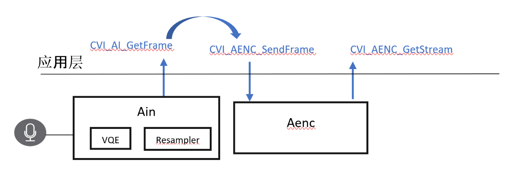
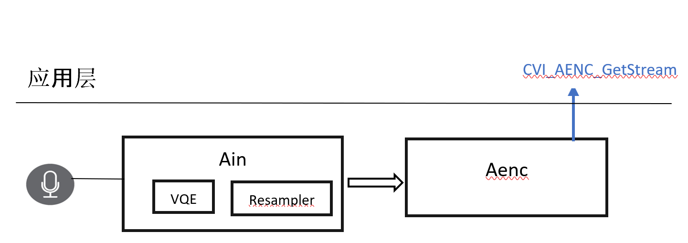
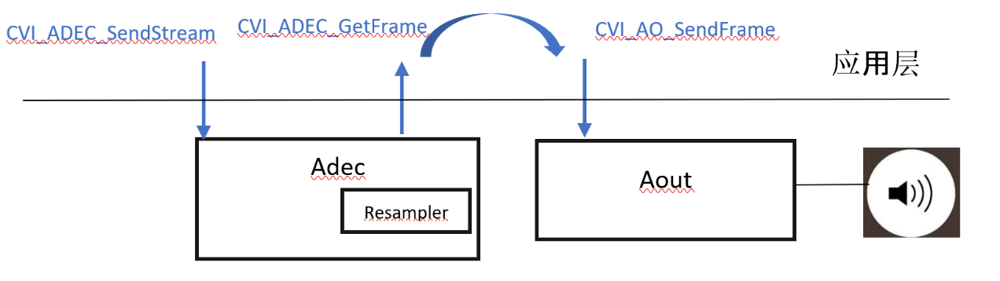
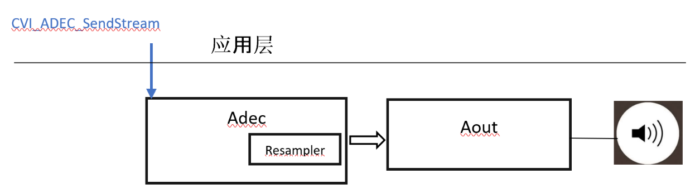

10.7. 范例码及板端初步测试¶
10.7.1. 范例码说明¶
User-Get Mode : |
优点：SDK使用者可以拿到并侧录每个audio frame状态。 使用者在应用层可以drop / delay / copy 等操作。 缺点：SDK使用者在应用层需自行开线程做get / send 动作。 |
Bind Mode : |
优点：SDK用户只要创建完通道参数，只须负责拿取或播送资料。缺点：应用层无法调配及观测目前状态。 |
Uplink Audio (收音->编码)：
参照码源: cvi_sample_audio.c : SAMPLE_AUDIO_AiAenc
{kind=link}

User-Get Mode示意图如上
{kind=link}

Bind Mode 示意图如上
Downlink Audio (解碼->播音)：
参照码源: cvi_sample_audio.c : SAMPLE_AUDIO_AdecAo
{kind=link}

User-Get Mode示意图如上
{kind=link}

Bind Mode 示意图如上
10.7.2. 板端初步测试¶
随项目释出的版本不同，如须与应用工程人员同步时，音频版本信息显得相当重要，用户拿到SDK 软件后，可以透过音频相关软件得知版本以及板子音频状态。sample_audio 执行程序所对应的内容即为 cvi_sample_audio.c 内的实做。
客制化板子初期，使用者可以透过下列方式先做双声道录音，确认储存的档案有音频波形，确认输入端正确，并可在录音后直接双声道播音确认喇叭运作正常。
[了解你的Audio SDK版本]：
sample_audio 7
console会显示如下：
version [cviaudio_2021_tinyalsa0407A]
其中[]内所显示的即为音频版本信息。
[录音范例码]：
sample_audio 4
cvi_sample_audio.c ,case 4。[播音范例码]：
sample_audio 5 檔名.raw
对应范例码流程: cvi_sample_audio.c ,case 5。
音频释出动态链接文件(Audio Release SO file)，请确保项目释出的SDK内有以下lib以保证音频SDK API完整性：
名称 |
功能 |
|---|---|
libcvi_audio.so |
Audio API 对接层 |
libcvi_RES1.so |
Audio 重采样模块 |
libcvi_VoiceEngine.so |
Audio 编解碼模块 |
libcvi_vqe.so |
Audio 算法对接层 |
libssp.so |
Audio SSP(含AEC)算法 |
libaec.so |
Audio AEC 算法 |
libtinyalsa.so |
Audio 音频录音播音ALSA层 |
libaacenc2.so |
AAC 编码相关-正式文件请洽FAE人员 |
libaacdec2.so |
AAC 译码相关-正式文件请洽FAE人员 |